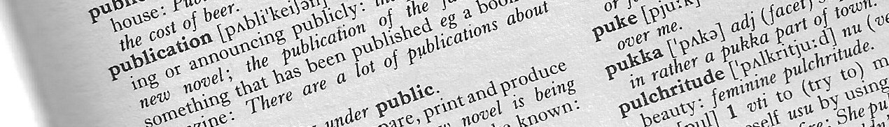

Publications from 2005 are listed.
The full list of publications is available through Google Scholar
2021
- Relaxation dynamics of a flexible rod in a fluid
Ayrton Draux, Hoa-Ai Beatrice Hua, Pascal Damman, Fabian Brau
Physical Review Fluids 6, 114102 (2021)
- Investigating the relationship between the mechanical properties of plasma polymer-like thin films and their glass transition temperature
Nathan Vinx, Pascal Damman, Philippe Leclère, Bruno Bresson, Christian Fretigny, Claude Poleunis, Arnaud Delcorte, Damien Cossement, Rony Snyders, Damien Thiry
Soft Matter 17, 10032-10041 (2021)
- Essential role of papillae flexibility in nectar capture by bees
Ayrton Draux, Hoa-Ai Beatrice Hua, Amandine Lechantre, Denis Michez, Pascal Damman, Fabian Brau
PNAS 118, e2025513118 (2021); https://doi.org/10.1073/pnas.2025513118.
2020
- Microscopic Picture of Erosion and Sedimentation Processes in Dense Granular Flows
D. Dumont, P. Soulard, T. Salez, E. Raphaël, P. Damman
Phys. Rev. Lett. 125, 208002 (2020).
- The wrinkling concept applied to plasma‐deposited polymer‐like thin films: A promising method for the fabrication of flexible electrodes
Damien Thiry, Nathan Vinx, Pascal Damman, Francisco J. Aparicio, Pierre‐Yves Tessier, David Moerman, Philippe Leclère, Thomas Godfroid, Sylvain Deprez, Rony Snyders
Plasma Process Polym. e2000119, 1-6 (2020).
2019
- Collect of nectar by bumblebees: How physics of fluid demonstrates the prominent role of tongue’s morphology
Amandine Lechantre, Denis Michez, Pascal Damman
Soft Matter, 15, 6392-6399 (2019).
2018
- Cylinder morphology of a stretched and twisted ribbon
Vincent Déemery, Huy Pham Dinh, Pascal Damman
Phys. Rev. E 98, 012801 (2018) (arxiv.org/abs/1804.08522).
- Emergent Strain Stiffening in Interlocked Granular Chains
D. Dumont, M. Houze, P. Rambach, T. Salez, S. Patinet, P. Damman
Phys. Rev. Lett. 120, 088001 (2018). Cover, Editors' Suggestion & Physics Synopsis
- The mechanics of slender structures (comment)
Pedro Reis, Fabian Brau, Pascal Damman
Nature Physics, 14, 1150–1153 (2018).
2017
- Predation with the tongue through viscous adhesion, a scaling approach
Maurine Houze, Pascal Damman
Soft Matter, 13, 2120-2124 (2017).
2016
- From cylindrical to stretching ridges and wrinkles in twisted ribbons
Huy Pham Dinh, Vincent Démery, Benny Davidovitch, Fabian Brau, Pascal Damman
Phys. Rev. Lett. 117, 104301 (2016) (arXiv:1605.03728v1).
- Dynamics of the prey prehension by chameleons through viscous adhesion
Fabian Brau, Déborah Lanterbecq, Leïla-Nastasia Zghikh, Vincent Bels, Pascal Damman
Nature Physics, 12, 931-935 (2016).
Featured in National Geographic, Sci-News, Phys.org, wissenschaft.de, ABC.net.au, Augsburger Allgemeine, Der Tagesspiegel, El Mundo, Science Daily, New Zealand Herald, The Economic Times, Bangkok Post, Nature World News,
Washington Post, LA Times, NY Times, Le Monde, Le Soir, The Scientist Magazine, Pour la Science, La Recherche, Science et avenir
- Superhydrophobic Surfaces Created by Elastic Instability of PDMS
Abbas Sabbah, Ayman Youssef, Pascal Damman
Appl. Sci. 2016, 6, 152 (doi:10.3390/app6050152).
- Study of Hybrid Microscopic and Macroscopic Buckling in UV Treated PDMS
Abbas Sabbah, Ayman Youssef, Pascal Damman
International Journal of Sciences, 2016, 5, 67-74.
2015
- On-Demand Wrinkling Patterns in Thin Metal Films Generated from Self-Assembling Liquid Crystals
Laurens T. de Haan, Philippe Leclère, Pascal Damman, Albertus P. H. J. Schenning, and Michael G. Debije P.
Adv. Funct. Mater. 2015, 25, 1360-1365). Cover
2013
- Tilted Fiber Bragg Gratings as new sensing device for in situ and real time monitoring of surface-initiated polymerizations
Pilate J., Renoirt J.-M., Caucheteur C., Raquez J.-M., Meyer F., Mégret P., Dubois P., Damman P.
Polymer Chemistry, (2013).
- Highly sensitive detection of molecular interactions with plasmonic optical fiber grating sensors
Voisin V., Pilate J., Damman P., Mégret P., Caucheteur C.
Biosensors & Bioelectronics, (2013).
- Resonance secondary radiation enhanced by quadrupole mode of plasmonic arrays
Lanterbecq, D., Van Deun, R., Morarescu, R., Damman, P., Kolaric, B.
Optics Communications, 308, 152-158 (2013).
- Wrinkle to fold transition: influence of the substrate response
F. Brau, P. Damman, H. Diamant, T.A. Witten
Soft Matter, 9, 8177-8186 (2013)
(Review article on invitation for themed issue "The geometry and topology of soft matter").
2012
- Design of curved photonic crystal using swelling induced instabilities
Kolaric B., Desprez S., Brau F., Damman P.
J. Mater. Chem. 22, 16205-16208 (2012).
- Exploiting the localized surface plasmon modes in gold triangular nanoparticles for sensing applications
Rodica Morarescu, Honghui Shen, Renaud Vallée, Bjorn Maes, Branko Kolaric, Pascal Damman
J. Mater. Chem. 22, 11537-11542 (2012).
- Surface-initiated controlled polymerization as a convenient method for designing functional polymer brushes: From self-assembled monolayers to patterned surfaces
Olivier, A., Meyer, F., Raquez, J.-M., Damman, P., Dubois, P.
Progress in Polymer Science, 37, 157-181 (2012).
- Adhesion of soft viscoelastic adhesives on periodic rough surfaces
D. Martina, C. Creton, P. Damman, M. Jeusette and A. Lindner
Soft Matter, 8, 5350-5357 (2012).
2011
- How Geometry Controls the Tearing of Adhesive Thin Films on Curved Surfaces
Olga Kruglova, Fabian Brau, Didier Villers, Pascal Damman
Phys. Rev. Lett. 107, 164303 (2011).
Editors' suggestion.
- Self-Cleaning Surfaces Prepared By Microstructuring System
Abbas Sabbah, H. Vandeparre, F. Brau and P. Damman
Physics Procedia, 21, 193-197 (2011).
- Influence of Chain Interdiffusion Between Immiscible Polymers on Dewetting Dynamics
S. Coppée, S. Gabriele, A. M. Jonas, J. Jestin, P. Damman
Soft Matter, 7, 9951-9955 (2011).
- Confined Wrinkling: Impact on pattern morphology and periodicity
H. Vandeparre, S. Desbief, R. Lazzaroni, C. Gay, P. Damman
Soft Matter, 7, 6878 - 6882 (2011),
Selected as a "Soft Matter Hot article".
- Wrinkling hierarchy in constrained thin sheets from suspended graphene to curtains
H. Vandeparre, M. Pineirua, F. Brau, B. Roman, J. Bico, C. Gay, W. Bao, C.N. Lau, P.M. Reis, P. Damman
Phys. Rev. Lett. 106, 224301 (2011).
Selected as Cover, Editors' suggestion, Physics Synopsis.
Featured in Le Soir (newspaper), ScienceNews (4/06/2011), PhysicsWorld.com, Universcience TV, Physics Central, Physics buzz, Spektrumdirekt.de, Science et Avenir (popularization magazine)
- Tuning nanopatterns on fused silica substrates: a theoretical and experimental approac
R. Morarescu, L. Englert, B. Kolaric, P. Damman, R.A.L. Vallée, T. Baumert, F. Hubenthal, F. Traeger
J. Mater. Chem. 21, 4076-4081, (2011).
- Multiple-length-scale elastic instability mimics parametric resonance of nonlinear oscillators
F. Brau, H. Vandeparre, A. Sabbah, C. Poulard, A. Boudaoud, Pascal Damman
Nature Physics, 7, 56-60, (2011).
Featured in Le Soir, Science & Vie, CNRS International Magazine, CNRS News, Science Magazine News, Science Daily, physOrg, Science Daily, Planet Techno Science, Material World, Athena, etc ...
- Reversible positioning at submicrometre scale of carbon nanotubes mediated by pH-sensitive poly(amino-methacrylate) patterns
A. Olivier, F. Meyer, S. Desbief, J-M Raquez, P. Verge, R. Lazzaroni, P. Damman, Ph. Dubois
Chem. Comm. 47, 1163-1165, (2011).
- Semi-crystalline poly(epsilon-caprolactone) brushes on gold substrate via "grafting from" method : new insights with AFM characterization
A. Olivier, J.M. Raquez, P. Dubois, P. Damman
European Polymer Journal}, 47, 31-39 (2011).
2010
- Hierarchical Wrinkling Patterns
H. Vandeparre, S. Gabriele, F. Brau, C. Gay, K.K. Parker, P. Damman
Soft Matter, 6, 5751-5756, (2010).
- In situ tuning the optical properties of a cavity by wrinkling
B. Kolaric, H. Vandeparre, S. Desprez, R.A.L. Vallée, P. Damman
Applied Physics Letters, 96, 043119, (2010).
- Superhydrophobic Aluminum Surfaces by Deposition of Micelles of Fluorinated Block Copolymers
S. Desbief, B. Grignard, C. Detrembleur, R. Rioboo, A. Vaillant, D. Seveno, M. Voué, J. De Coninck, A. M. Jonas, C. Jérome, P. Damman, R. Lazzaroni
Langmuir, 26, 2057-2067 (2010).
2009
- Dewetting as a investigative tool for studying properties of thin polymer films
G. Reiter, S. Al Akhrass, M. Hamieh, P. Damman, S. Gabriele, T. Vilmin, E. Raphël
Eur. Phys. J. Special Topics 166, 165-172 (2009).
- On the Mechanics of Rim Instabilities in Viscoelastic Polymer Thin Films
S. Gabriele, S. Coppée, G. Reiter, P. Damman
Eur. Phys. J. Special Topics, 166, 55-61 (2009). Cover
2008
- Wrinkling of Stimulo-Responsive Surfaces, Mechanical Instability Coupled to Diffusion
H. Vandeparre, P. Damman
Phys. Rev. Lett. 101, 124301 (2008). Cover
- Controlled nanorubbing of polythiophene thin films for field-effect transistors
G. Derue, D. Serban, Ph. Leclère, S. Melinte, P. Damman, R. Lazzaroni
OrganicElectronics, 9 (2008) 821-828
2007
- Slippery or Sticky Boundary Conditions: Control of Wrinkling in Metal-Capped Thin Polymer Films by Selective Adhesion to Substrates
H. Vandeparre, J. Léopoldès, C. Poulard, S. Desprez, G. Derue, C. Gay, P. Damman
Phys. Rev. Lett. 99, (2007) 188302.
- Control of Spreading and Drying of a Polymer Solution from Marangoni flows
C. Poulard, P. Damman
EuroPhysics Letters, 80, (2007) 64001.
- Relaxation of Residual Stress and Re-entanglement of Polymers in Spin-coated Films
P. Damman, S. Gabriele, S. Coppée, S. Desprez, D. Villers, T. Vilmin, E. Raphaël, H. Moustafa, S. Al Akhrass, G. Reiter
Phys. Rev. Lett. 99, (2007) 036101.
- The influence of substrate properties on the dewetting dynamics of viscoelastic polymer films
M. Hamieh, S. Al Akhrass, T. Hamieh, P. Damman, T. Vilmin, E. Raphaël, G. Reiter
The Journal of Adhesion, 83, (2007) 367-381.
2006
- From a 2D chemical pattern to a 3D topology through selective inversion of a liquid - liquid bilaye
J. Léopoldès, P. Damman
Nature Materials, 5, (2006) 957-961.
Editors' suggestion, "Research highlights" in Lab on a Chip.
- Instabilite des films minces de polymere, Relations avec la dynamique des chaines
P. Damman, S. Coppée, G. Derue, S. Desprez, S. Gabriele, J. Léopoldès, S. Sclavons, D. Villers
l'actualité chimique, (2006) 40-46.
- Viscoelastic Dewetting of Constrained Polymer Thin Films
S. Gabriele, P. Damman, S. Sclavons, S. Desprez, S. Coppée, H. Moustafa, S. Al Akhrass, G. Reiter, T. Vilmin, E. Raphaël
Journal of Polymer Science: Part B: Polymer Physics, 44, (2006) 3022-3030.
- The Disentanglement Time of Polymers Determines the Onset of Rim Instabilities in Dewetting.
S. Gabriele, S. Sclavons, G. Reiter, P. Damman
Physical Review Letters, 96,(2006), 156105.
- The Role of Nonlinear Friction in the Dewetting of Thin Film Polymerss
T. Vilmin, E. Raphaël, P. Damman, S. Sclavons, S. Gabriele, G. Reiter, M. Hamieh
Europhysics Letters, 73 (6), 906-912 (2006).
2005
- Residual stresses in thin polymer films cause rupture and dominate early stages of dewetting
G. Reiter, M. Hamieh, P. Damman, S. Sclavons, S. Gabriele, Th. Vilmin, E. Raphaël
Nature Materials, 4, (2005), 754-758.
- Nanorubbing of Polythiophene surfaces.
G. Derue,S. Coppée, S. Gabriele, M. Surin, V. Geskin, F. Monteverde, P. Leclère, R. Lazzaroni, P. Damman
Journal of the American Chemical Society, 127, (2005), 8019-8020.